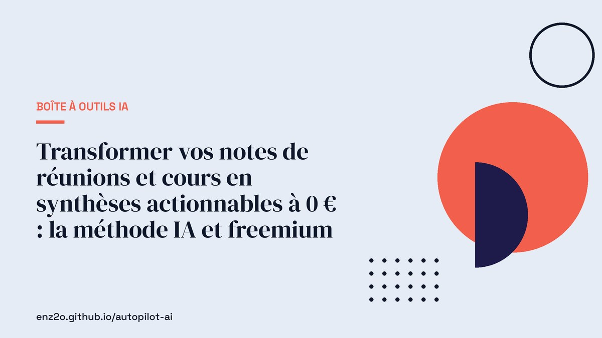

Transformer vos notes de réunions et cours en synthèses actionnables à 0 € : la méthode IA et freemium
2026-11-27
Article contenant des liens affiliés.

Que vous soyez freelance en enchaînement de rendez-vous clients, étudiant submergé par des heures de CM, ou créateur de contenu organisant des sessions d'interviews, la gestion des notes est un goulot d'étranglement majeur.
Passer deux heures à rédiger un compte-rendu propre après une réunion d'une heure est l'un des pires pièges de productivité. Entre les oublis, les mauvaises interprétations et la fatigue intellectuelle, la prise de notes manuelle traditionnelle consomme une énergie précieuse qui devrait être dédiée à l'exécution.
Heureusement, il est aujourd'hui possible de bâtir un système complet de capture, de transcription et de synthèse automatisée sans débourser un seul euro. Voici la méthode étape par étape pour passer du chaos des notes éparpillées à un système clair et actionnable grâce à l'intelligence artificielle et aux logiciels freemium.
Étape 1 : Capturer l'audio de haute qualité sans déconcentration
Le fondement d'une bonne synthèse automatisée repose sur la qualité du fichier source. Si votre enregistrement audio est saturé ou lointain, les modèles de transcription à base d'IA commettront des erreurs d'interprétation.
Choisir le bon matériel de capture
Pour obtenir un signal audio propre sans investissement lourd, l'équipement de départ compte énormément : - Pour les étudiants et réunions physiques : Un simple smartphone posé au centre de la table avec une application de dictaphone intégrée suffit généralement, à condition d'éviter de manipuler l'appareil pendant la prise de parole. - Pour les visioconférences (freelances et créateurs) : Utilisez un microphone USB dédié pour isoler votre voix et celle de vos interlocuteurs.
Si vous travaillez dans un environnement bruyant, l'usage d'un équipement adapté comme un casque micro antibruit bureau permet de conserver une voix claire sur vos enregistrements sans capter les bruits parasites de la pièce.
Les outils de capture audio gratuits
- Voice Memos / Enregistreur Windows : Gratuit et déjà installé sur votre machine.
- OBS Studio : Logiciel 100 % gratuit et open-source pour capturer simultanément le son de votre microphone et celui du système lors d'une visioconférence.
Étape 2 : Transcrire la parole en texte grâce aux modèles IA gratuits
Une fois votre fichier audio en main, l'objectif est de le convertir en texte brut avec un taux de précision maximal.
La puissance de Whisper en accès freemium
Le modèle open-source Whisper développé par OpenAI a révolutionné la reconnaissance vocale. Il comprend le français avec une précision impressionnante, y compris le jargon technique et les hésitations de langage.
Pour l'utiliser à 0 € sans compétences techniques : 1. Outils Web freemium : Des plateformes comme MacWhisper (version gratuite sur Mac), TurboScribe (offre gratuite limitant le nombre de fichiers par jour) ou des espaces Hugging Face gratuits vous permettent de glisser-déposer votre fichier audio pour obtenir un texte structuré en quelques minutes. 2. Extensions et intégrations : Si vos réunions se déroulent sur Google Meet ou Zoom, des extensions de navigateurs proposent des quotas gratuits mensuels pour générer la transcription en temps réel.
Une fois le texte brut généré, ne perdez pas de temps à le relire en entier. C'est ici que les grands modèles de langage entrent en jeu.
Étape 3 : Transformer le texte brut en synthèses structurées avec l'IA
Le texte brut issu d'une réunion d'une heure représente souvent entre 5 000 et 10 000 mots d'échanges décousus. Pour rendre cette donnée exploitable, vous devez utiliser des prompts précis sur des outils d'IA gratuits (ChatGPT, Claude ou Le Chat Mistral).
Le Prompt de synthèse pour réunions clients ou de groupe
Copiez-collez votre transcription brute et utilisez la structure de prompt suivante :
"Agis comme un chef de projet chevronné. Voici la transcription brute d'une réunion. Rédige un compte-rendu clair et concis comprenant trois sections distinctes : 1. Un résumé exécutif en 5 puces clés. 2. La liste détaillée des décisions validées. 3. Le tableau des actions à accomplir (avec qui fait quoi et pour quand). Ne conserve que les informations essentielles."
Le Prompt de synthèse pour cours et conférences (spécial étudiants)
"Agis comme un pédagogue expert. Voici la transcription brute d'un cours. Découpe ce texte en un plan de révision clair avec des titres, les définitions des concepts clés à retenir, et une liste de 5 questions de révision avec leurs réponses."
En moins de 30 secondes, l'IA trie le superflu et vous livre un document prêt à être utilisé ou partagé.
Étape 4 : Centraliser, héberger et distribuer vos synthèses à 0 €
Produire des comptes-rendus efficaces ne sert à rien s'ils restent stockés au fond d'un dossier téléchargements. Il est indispensable de les intégrer dans un flux de travail fluide pour vos clients, vos collaborateurs ou vos camarades de classe.
Créer un espace de ressources client structuré
Pour un freelance, envoyer un simple e-mail avec du texte brut manque de professionnalisme. L'idéal est de mettre à disposition de votre client un espace centralisé où il peut retrouver l'historique des synthèses, des livrables et des ressources partagées.
Pour mettre en place un portail client ou un hub de formation/ressources sans débourser un centime, vous pouvez utiliser Systeme.io. Dans sa version gratuite, cet outil tout-en-un vous permet de créer des espaces membres ou des portails d'information privés dans lesquels vous déposez vos comptes-rendus, enregistrements et documents récapitulatifs au même endroit.
Diffuser des récapitulatifs automatisés à votre audience
Si vous êtes créateur de contenu ou formateur, ces synthèses de veille ou de réunions peuvent devenir une véritable valeur ajoutée pour votre communauté : - Transformez vos meilleures notes de cours ou d'interviews en newsletters hebdomadaires. - Proposez un accès gratuit à un coffre-fort de ressources pour capturer des e-mails d'inscrits.
Grâce à Systeme.io, vous pouvez directement lier votre capture de mails à l'envoi automatique de ces synthèses par e-mail, sans avoir à combiner trois outils différents.
Étape 5 : Classer et archiver pour retrouver n'importe quelle information
Après quelques semaines d'utilisation de ce système, vous aurez accumulé des dizaines de comptes-rendus d'une valeur inestimable.
Structurer votre base de connaissances
Pour organiser vos fichiers récapitulatifs :
- Adopt la nomenclature unique : Nommez vos synthèses sous la forme AAAA-MM-JJ_Projet_Sujet (ex: 2024-10-15_ClientX_CahierDesCharges).
- Ajoutez des mots-clés (tags) : En tête de chaque synthèse, incluez 3 à 5 mots-clés thématiques pour retrouver facilement un sujet via la barre de recherche de votre outil de prise de notes (Notion, Obsidian ou Google Drive).
Pour ceux qui préfèrent garder une trace physique de leurs idées avant de les numériser, associer ce workflow digital avec un carnet de notes format A5 couverture rigide permet de noter les éléments à chaud en réunion avant de lancer la transcription vocale automatique.
Résumé du système complet à 0 €
- Capture : Enregistrez la réunion ou le cours via votre smartphone ou OBS Studio.
- Transcription : Convertissez l'audio en texte avec un outil freemium basé sur Whisper.
- Extraction : Passez la transcription brute dans un LLM gratuit avec un prompt structuré pour obtenir un compte-rendu clair.
- Restitution : Déposez la synthèse sur un espace partagé comme Systeme.io ou envoyez-la par e-mail à vos clients ou abonnés.
- Archivage : Classez le document avec une nomenclature standardisée pour des recherches instantanées.
En appliquant cette routine dès votre prochaine réunion ou votre prochain cours, vous économiserez immédiatement entre 2 et 4 heures de travail hebdomadaires tout en offrant une communication d'une clarté irréprochable à vos interlocuteurs.